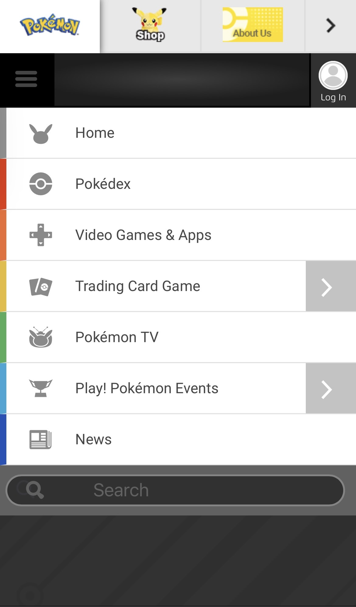
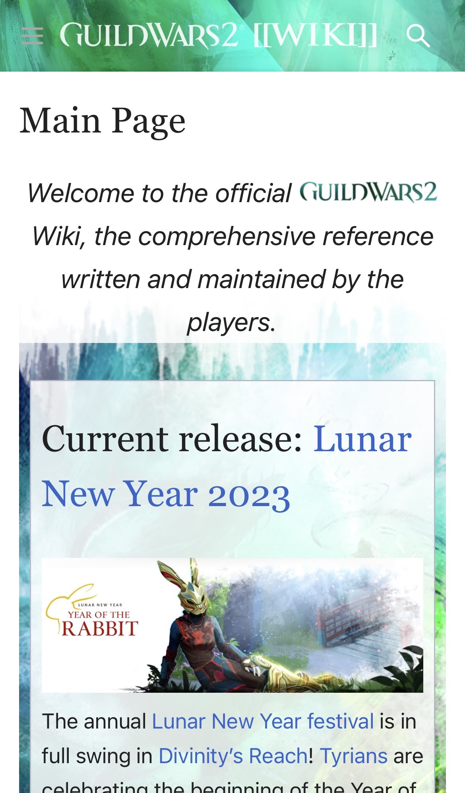

The Pokemon Company
Pokemon.com Hick's Law is all about making sure your site is not overloading people with too many options to click on and not placing a drop-down menu too far away from the origin of being clicked to obtain said menu. The less stuff, the higher reaction time a user has, and the more comfortable they will be. As you can see in this screen shot, I have the drop-down window pulled down on my phone. All of these choices are simple concise and are really close to the original spot I clicked on to get to the drop-down menu. All of these links are pretty strait forward too. If I click on one, I end up where I want to be on the site within one click. Everything is neatly put and is small so I don't get overloaded trying to navigate the site. This is why I feel the Pokemon website is a prefect example of Hick's Law.
ArenaNet
GuildWars2Wiki.com White Space, it is super important in Web Design and is really useful when trying to make a page more astatically pleasing to the eye. This Wiki for the game Guild Wars 2, made by ArenaNet the creators of the game, does just that. It utilizes a lot of white space, a lot of breaks from one idea on the page to another. Another thing I noticed and thought was pretty neat is that the site uses a background picture as white space. The picture behind each neatly put square of information counts as whitespace. Because all the ideas are separated by a pretty consistent, small, and noticeable margin. This helps us navigate the site as well. Allowing us the ability to know what is separated and what is connected. This is a really amazing example of white space usage on the web, and I hope to incorporate this similar idea in some of my own projects.
Nintendo
Nintendo.comRepetition in Web Design is having similar elements keep popping up within a site. The Nintendo website is a perfect example of this because of the red rectangle that appears at the top of the site. This red rectangle, if you scroll through the site, is a common repeating theme through out the web page. As you can see it popping up as links throughout the page, and also as the footer of the page its self. This allows the site to become pleasing to the eye, almost rewarding the eye with something it expects as you scroll down the page. This is a very powerful way to keep a site nice, and keep it looking organized. Something to note as well, Nintendo did a very nice job at using repetition, but not over using it. They also allowed for space that could be changed and modified when needed. This is why this is a very powerful example of repetition to me.